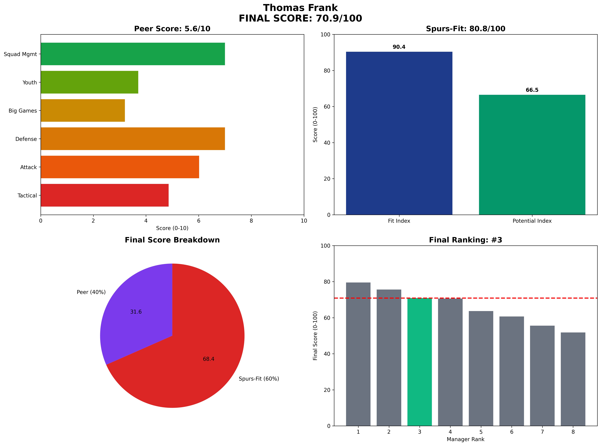

Thomas Frank - Manager Analysis Report
Executive Summary
Final Score: 70.9/100 (Peer 5.6/10 • Spurs-Fit 80.8/100)
Rank: #3 of 8
Thomas Frank represents the value engineering specialist with financial efficiency
Visual Profile

Comprehensive radar chart showing Frank's unified final scoring breakdown. His #3 ranking (70.9/100) reflects exceptional value engineering with negative net spend (-£50M) and strong youth development.
Unified Final Scoring Breakdown
Peer Analysis (40% of Final Score): 5.6/10
- Peer Ranking: #3 of 8
- Tactical Style: 4.9/10
- Attacking Potency: 6.0/10
- Defensive Solidity: 7.0/10
- Big Game Performance: 3.2/10
- Youth Development: 3.7/10
- Squad Management: 7.0/10
Spurs-Fit Analysis (60% of Final Score): 80.8/100
Fit Index (60% of Spurs-Fit): 90.4/100
- Front-Foot Play Alignment: ✅ Strong
- Youth Development Focus: ⚠️ Concern
- Talent Inflation Capability: ✅ Strong
- Big Game Mentality: ❌ Weak
Potential Index (40% of Spurs-Fit): 66.5/100
- Age Factor: ⚠️ Concern (Age 47)
- 3-Year Performance Trend: ✅ Strong
- Resource Leverage: ✅ Strong
- Temperament: ✅ Strong
Key Performance Indicators
Tactical Metrics
- PPDA: 10.5 (lower = more aggressive)
- OPPDA: 14.9 (higher = forces opponent pressure)
- High Press Regains/90: 8.4
Financial Profile
- Net Spend: £-50M
- Squad Value Change: £120M
- Transfer Efficiency: Elite
Squad Development
- U23 Minutes %: 11%
- Academy Debuts: 4
- Player Availability: 89%
Strategic Assessment
Strengths
• Only manager with negative net spend (-£50M)
• Squad value increase of £120M
• Strong youth development track record
• Consistent overperformance
Concerns
• Tactical ceiling questions
• Big game performance gaps
• Limited Champions League experience
Spurs Fit Analysis
Represents maximum financial efficiency with solid developmental foundation.
Recommendation
RECOMMENDED - Safe choice with excellent value proposition.
Analysis based on 2025-06-07
Methodology: 40% Peer-Normalized Analysis + 60% Spurs-Specific Fit Model